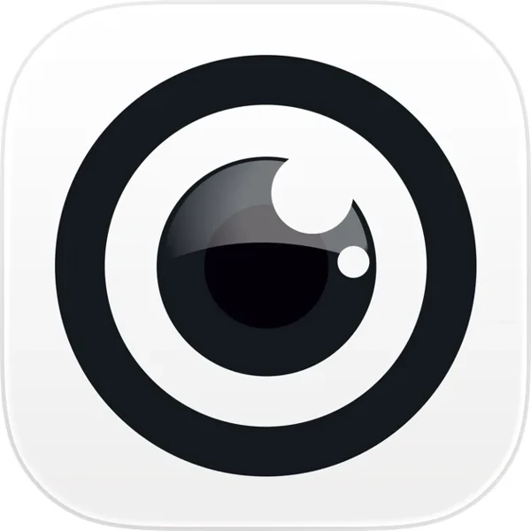

IPEYE
Камеры ПВЗ, прямой эфир и облачные записи IPEYE
Кабинет IPEYE
Войди на сайте IPEYE, чтобы увидеть все камеры своего аккаунта.
Как скачать фрагмент
- Открой нужную камеру в кабинете IPEYE и выбери «Архив».
- Укажи дату, начало и конец фрагмента.
- Нажми «Скачать» и дождись подготовки файла.
Камеры в «Эд ПВЗ»
Проверяем доступ…
Войти в «Эд ПВЗ»Выбери добавленную камеру
Если IPEYE показывает «Встраивание видео запрещено сервисом», нажми «Смотреть в IPEYE». Откроется эфир выбранной камеры в кабинете.
Добавить камеру IPEYE
Добавленные камеры доступны в этой вкладке до выхода из аккаунта. В ссылке на плеер может быть доступ к видео, поэтому передавай её только тем, кому разрешён просмотр.